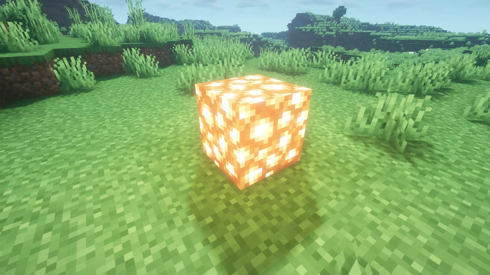
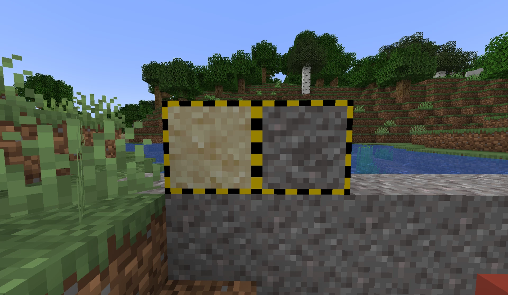
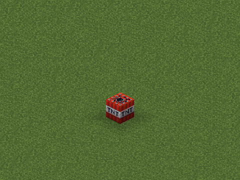
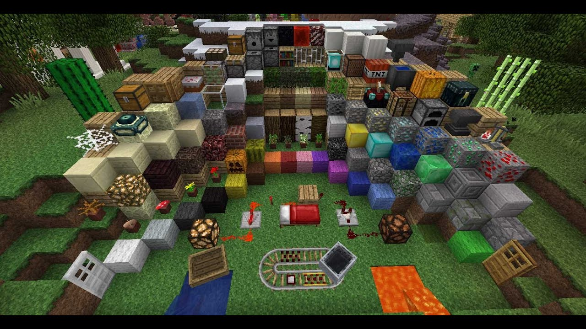

Un bloque es la unidad básica de la estructura de un mundo de Minecraft, que puede ser tanto colocado como roto, así como servir como recurso y material. Los bloques presentan formas poligonales, y cumplen diversos roles dependiendo de su tipo.
Los bloques están dispuestos en una cuadrícula tridimensional de celdas de 1 metro cúbico. Cada celda generalmente contiene exactamente un bloque, como la tierra o la roca, pero existen excepciones con formas variadas, como las losas o los atriles.
Ciertos bloques pueden interpretar posiciones en las que no se pueden colocar por medios normales como una posición válida. Por ejemplo, un letrero colocado en el aire a través de /setblock o a través de errores permanece en el aire incluso cuando se actualiza, hasta que se rompe o se coloca un bloque debajo de él y se rompe.
En general, construyen el entorno del juego, y la mayoría se puede recolectar y utilizar de varias maneras. Minecraft posee tres tipos principales de bloques:
Los bloques poseen el concepto de transparencia, que es la capacidad de algunos bloques de permitir al jugador y a las entidades ver a otras entidades a través de ellos. Este concepto se divide en tres tipos de transparencia:
Algunos bloques emiten luz. Dependiendo del bloque, esta puede tener una intensidad en niveles que van del 0 al 15, donde la intensidad 0 no emite luz y la intensidad 15 da la mayor cantidad de luz. Unos ejemplos de estos bloques son los faroles o las antorchas.
Los bloques opacos bloquean completamente la luz, mientras que los bloques transparentes permiten que pase completamente y los traslúcidos permiten que pase parcialmente. Los bloques traslúcidos degradan la luz un nivel en Java Edition o una cantidad mayor de niveles en Bedrock Edition, dependiendo del bloque.
Casi todos los bloques ignoran la gravedad, manteniendo su posición. Sin embargo, hay algunos bloques que no pueden mantenerse en su posición, y caen al suelo(ejemplo son la grava y arena). Cuando caen, se convierten en una entidad con la misma apariencia del bloque, la cual cae hasta hacer colisión con una superficie.
Si esta superficie es un bloque sólido, tiene que tener la altura y/o posición necesaria para servir de base (ejemplos son la piedra, o losas en posición superior). Los bloques no sólidos o bloques sólidos mal posicionados o sin la altura necesaria provocarán que la entidad al caer suelte el bloque como un objeto.
Cuando se rompen, los bloques emiten sonidos y partículas asociados con ellos mismos, excepto en los siguientes casos:
Todos los bloques están sujetos a las explosiones, las cuales destruyen algunos bloques más fácilmente que otros.
El aire es un bloque especial. Actúa como un bloque transparente irrompible, así como un sustituto para la ausencia de bloques. Además, en Java Edition posee dos variantes: aire de cueva y aire de vacío, usados en cuevas y el vacío, respectivamente.
La mayoría de los bloques sólidos tienen 1 metro de altura (3,28084 pies o 1250⁄381 pies), pero varios bloques tienen alturas de bloque no estándar, como las capas de nieve.
Un jugador puede subir automáticamente de una altura más baja a una más alta si la diferencia es como máximo 0.6 (3⁄5) de un bloque o 1.9685.. pies (250⁄127 pies).
Las texturas en las caras de los bloques son de 16 × 16 pixeles. La mayoría de los bloques son proporcionalmente un metro cúbico por defecto, pero su forma se puede cambiar usando modelos. La mayoría de los bloques tienen texturas estáticas, pero estos bloques están animados:
Usando paquetes de recursos, el jugador puede cambiar las texturas y la resolución de los bloques, incluso si su textura es animada. También pueden cambiar las formas de los bloques usando modelos y el tamaño de los bloques a cualquier tamaño con igual ancho y alto, aunque los tamaños que tienen una potencia de dos tienden a funcionar mejor.
Normales: Estos bloques son los que un jugador puede hallar en un mundo normalmente.
Técnicos: Los bloques técnicos sirven para varios propósitos durante los eventos dentro del juego, o usan una ID separada con espacio de nombre para evitar combinaciones innecesarias de estados de bloque.
Educativos: Los bloques educativos sirven para complementar la enseñanza y el aprendizaje usando Minecraft.
Eliminados: Los bloques eliminados ya no existen en las versiones actuales del juego. Se subdividen en:
Broma: Estos bloques solo existen en versiones de broma del juego, y son chistes realizados por los desarrolladores en versiones publicadas el primero de abril.